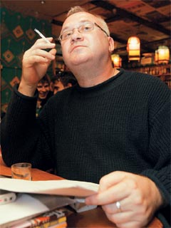

Илья Кормильцев: Ультра от культуры (Сергей Семенов, ЭКСПЕРТ Online, 30.05.2006)
Известный российский поэт считает, что одна из главных задач современного искусства – противостоять узурпации интеллектуального пространства культурным мейнстримом

Илья Кормильцев известен и в своей известности многолик. Для одних он прежде всего — автор текстов, написанных для суперпопулярной в конце прошлого века рок-группы «Наутилус Помпилиус». Для других — переводчик таких альтернативных общепринятым общественным вкусам западных авторов, как Ирвин Уэлш, Чак Паланик, Уильям Берроуз, Мишель Уэльбек. Для третьих — один из самых известных современных российских поэтов, далеко ушедший в своих сегодняшних стихах от «наутилусовских» текстов. Именно в этой ипостаси он недавно приезжал вместе с российскими поэтами Андреем Родионовым и Алиной Витухновской на поэтический фестиваль «Киевские Лавры-2006». Книжная кофейня «Бабуин», где проходил поэтический вечер этих авторов, была забита до отказа. Андрей Родионов, которого часто называют поэтом-панком, брал публику сумасшедшим эмоциональным напором. Алина Витухновская — ненормативной поэтической лексикой. Илья Кормильцев, как и следовало ожидать, оказался самым серьезным из этой поэтической троицы. Ведь он не только свободный художник, но и главный редактор самого радикального российского издательства «Ультра.Культура». Иначе говоря, человек, для которого противостояние современному культурному мейнстриму в поэзии и искусстве в целом является не просто личной позицией, а продуманной стратегией. Об этом, о месте и роли поэзии в современном мире, беседовал с Ильей Кормильцевым корреспондент «Эксперта».
— Я хотел бы начать с самого простого вопроса — что такое современная поэзия? Не так давно все было ясно. Стихотворение, чтобы считаться таковым, должно было иметь некие вполне определенные признаки — сюжет (например, рассказ о событии или переживании), ритм, может быть, рифму. Очевидно, что эти критерии устарели. Что пришло им на смену?
— Повозка, карета, автомобиль отличаются друг от друга, но сущность у них одна — это транспорт. Сущность поэзии остается одной и той же, независимо от того, насколько меняются ее технологии и формы. Поэзия — это способ трансляции. И в таком смысле она сильно отличается от художественной прозы, которая, так или иначе, является результатом наблюдений и размышлений. Проза обобщает опыт жизни, переживания, знание времени, истории, культуры, психологии, людских отношений, философии. Она более рассудочна и рациональна. Поэзия в самых лучших своих проявлениях — это чистая трансляция чего-то, относящегося к области сверхсознания, говорение. Нам всем известны древние истоки поэзии, ее тесная связь с шаманизмом, пророческим даром. Поэзия возникает в тот момент, когда произносятся слова, которые являются открытием для того, кто их написал. Проза очень тесно связана с личностью. Прозаик обычно может объяснить, на основании какого опыта или переживания он придумал те или иные образы или сюжеты. Поэзия в подавляющем большинстве случаев необъяснима для самого поэта. Читателей поэзия заставляет воспринимать вещи иначе, чем они воспринимались до того, как произошло соприкосновение с этой поэзией.
— Во времена существования СССР социальная значимость поэзии была четко выражена известной формулой Евгения Евтушенко «поэт в России больше, чем поэт». А на какую толику общественного внимания может, по-вашему, рассчитывать поэт сегодня?
— В дописьменную мифологическую эпоху в поэзии содержалось восемьдесят процентов образов внешнего мира, картины мироустройства. Потом появились другие формы описания мира, и поэзия заняла более скромное место. Однако и по сей день образно-эмоциональный слой человеческой психики во многом формируется поэтическим словом. Поэзия, особенно усваиваемая в раннем возрасте, — детские стихи, стихотворные сказки и прочее — становится серьезной частью национального сознания. Мы все сформированы поэзией. Даже те, кто соприкасался с ней только в школе. Очень много предметов и образов, с которыми мы встречаемся на протяжении своей жизни, сразу отзываются в голове поэтической цитатой. Например, из песен, усвоенных с детства. У каждого поколения есть некий обязательный слой песенной поэзии, которую знают поголовно все. И отношение этого поколения ко всему, происходящему в его жизни, во многом определяется содержанием данного песенного слоя. Даже когда оно и не осознается на рациональном уровне.
Чтобы отстоять свою культурную самостоятельность, художник должен все время обращаться к новым образам, метафорам, символам, способам выражения
Другое дело, что в культуре существует мода. Она циклична. Бывает эпоха музыки, эпоха литературы, эпоха кинематографа. Очень многие посещают поэтические чтения, концерты, киносеансы просто потому, что это модно или престижно. А количество людей, реально разбирающихся в той или иной области искусства, мне кажется, всегда одинаково. Социальная функция поэзии сейчас, на мой взгляд, полностью восстановилась, судя хотя бы по количеству людей, которые посещают поэтические чтения, например, у вас в Киеве. Или в Москве. Когда нынешней весной в Москве состоялась встреча с Мишелем Уэльбеком, зал в Политехническом был заполнен до отказа. Так же, как и в 60−е годы прошлого века, когда в нем проходили поэтические вечера Евтушенко и Вознесенского.
— Вы только что дали совершенно разные определения поэзии и прозы. Но тот же Мишель Уэльбек в своих поэтической и прозаической ипостасях довольно сходен.
— Конечно, Ульбек-поэт и Уэльбек-прозаик — это один и тот же человек с одним и тем же жизненным, историческим, социальным опытом. Естественно, что он пишет об одних и тех же вещах. Но я говорил не о наборе тем, а о способе выражения. В прозе ты должен придумать и изложить. В поэзии — прорваться и выплеснуть. Это разные вещи, даже если речь идет об одних и тех же темах.
— Когда вы сказали, что отношение к происходящему у каждого поколения во многом определяется неким обязательным слоем песенной поэзии, которую знают поголовно все, я тут же вспомнил Высоцкого и Окуджаву. Поэтические сборники и того, и другого расхватывались как горячие пирожки. Но напечатанные на бумаге тексты производили гораздо меньшее эмоциональное впечатление, чем те же тексты, спетые под музыку…
— Поэты пишут песни не так, как пишут стихи. Я сказал бы так: когда пишешь текст будущей песни, ты его про себя поешь. Перестав писать песни, я намеренно стараюсь, чтобы мои стихи были как можно больше не похожи на песни. Хочется обозначить наиболее длинную дистанцию. Говорить о том, что тексты песен могут существовать так же, как обычные, напечатанные на бумаге стихи, равнозначно утверждению, что автомобильное кресло могло бы существовать и без автомобиля. Наверное, могло бы. Однако если бы кресло конструировали не для автомобиля, его сделали бы по-другому.
— Осталась ли поэзия сегодня лабораторией языка, которой она часто была в прошлом веке?
— Мне кажется, что функция поэзии как лаборатории языка сильно преувеличена. Были в истории поэзии периоды, когда некоторые поэты придумывали новые слова, меняли грамматическую структуру, вносили что-то свое в ритмику. На мой взгляд, не это главное. Бывали, напротив, длительные и очень весомые периоды, когда поэты концентрировались на философии, изложении в своих стихах этических, моральных, исторических максим. И никто не думал о языковых экспериментах. Все-таки главное в поэзии то, что я назвал бы светским откровением, — это некие проникновения поэта в сущность мира, которые недостаточно системны, объемны и упорядочены для того, чтобы восприниматься как философия или религия.
— Видите ли вы разницу между современными российскими и украинскими поэтами?
— Да, безусловно. Украинская современная поэзия более локальна, чем современная русская. Она пытается извлечь какую-то метафизику из конкретной фактуры — стола, дерева, веревки. Я думаю, что в основе этого лежит (даже у самых «городских» украинских поэтов) некая ментальность крепкого крестьянина, независимого хозяина на своем участке земли. В этом украинская современная поэзия очень похожа на всю восточноевропейскую поэзию. Русская поэзия часто пытается оторваться от локального. В ней есть некий имперский размах, претензии на говорение не вовнутрь, а вовне.
— Давайте перейдем от Кормильцева-поэта к Кормильцеву-главному редактору самого радикального российского издательства. Ультракультура — это российский аналог западной контркультуры?
— Начнем с того, что ультракультура — неологизм, который мы сами придумали. Это то, что лежит за пределами культурного мейнстрима. Ультракультура шире контркультуры. Так, например, можно ли назвать традиционалистскую философию контркультурой? Ни в коем случае. Однако в современном мире она находится за пределами мейнстрима и, значит, становится частью ультракультуры. Какое-то явление контркультуры вполне может быть адаптировано мейнстримом, что сейчас происходит сплошь и рядом. А ультракультура — это то, что мейнстримная культура пытается отвергнуть, табуировать, объявить вне закона. Контркультура — социоэстетический термин, ультракультура — политический.
— В таком случае ставите ли вы перед ультракультурой задачу изменить сегодняшний мир? Как это сделала контркультура 60−х годов, которая воспитала новое молодое поколение, взорвавшее сытое, благополучное, самодовольное западное общество той эпохи.
— Нет, речь идет не об этом. Если уж совсем просто объяснять, в современном мире есть дискурсы, которые хотят господствовать, и те, которые сопротивляются этому. Политический контекст ультракультуры состоит в том, чтобы поддерживать идеи, протестующие против узурпации интеллектуального пространства. Это культурная аналогия геополитической борьбы против однополярного мира.
Однако контркультура 60−х, действительно изменив западный мир, кое-где подъела свои собственные корни, а то и, как змея, укусила сама себя за хвост. Так, политкорректность, выросшая из совершенно здравых предпосылок контркультуры, направленных на борьбу с кастовым расистским миром классической капиталистической культуры, в результате выродилась в основное оружие этого самого мира, против которого контркультура боролась.
Поэзия в подавляющем большинстве случаев необъяснима для самого поэта
Такая диалектика в культуре встречается постоянно. Потому что любой культурный символ полисемантичен. А значит, его всегда можно присвоить, экспроприировать. Поэтому в культуре все время идет война за значение символов. И в этой войне даже символы, которые в какой-то период кажутся оппозиционными господствующему дискурсу, буквально через несколько лет становятся его основными символами.
Поэтому культура — это всегда процесс. Художник, чтобы отстоять свою культурную самостоятельность, должен все время обращаться к новым образам, метафорам, символам, способам выражения. Нельзя один раз что-то написать, нарисовать, пропеть, удовлетвориться этим и сказать: ну вот и все, я заявил о себе. Всепожирающая коса времени вскоре или уничтожит высказывание или, что еще печальнее, вывернет его на сто восемьдесят градусов и превратит в собственную противоположность.
— Какова же в этой ситуации роль культурной традиции?
— Я часто говорю не культура и ультракультура, а культура и искусство. Культура для меня — это проговаривание текстов, утративших действенный смысл. Представьте себе, что священник строит свою сегодняшнюю проповедь на отрывке из Евангелия, где Христос говорит юноше: пойди и раздай все свое добро. Можно сразу, без всякого социологического опроса сказать, сколько людей из тех, кто слушал эту проповедь, выйдя из церкви, выполнят завет Христа. Точно так же люди ходят в театр, отсиживают оперное представление просто потому, что так принято.
Искусство обычно содержит в себе новые смыслы, которые невыносимы для обыденного человеческого сознания. И тогда культура выступает в роли организма, который снимает непосильные для человека смыслы искусства, переваривает их и превращает в нечто удобное и потребляемое. Иначе говоря, вырабатывает социальный иммунитет к искусству. В результате этого так называемого процесса культурного усвоения даже самое бунтарское безумное высказывание становится фактом изучения на уроках литературы или истории искусств и теряет всю свою действенность. Поэтому действующее начало в художнике должно постоянно атаковать инерцию с новых позиций, изобретать новые формы, зная, что любая революция, любой самый гениальный прорыв будет разжеван культурой зачастую уже при жизни творца. Пример — рок-н-ролл, который сегодня стал потребительской областью музыки, рассчитанной на определенную возрастную категорию, отрабатывающей инструменты социализации и дающей легализованный выход подростковой агрессивности. Это уже не бунтарская музыка, а карманная революция от корпорации MTV. То же самое часто происходит и с поэзией.
Культура делает с искусством то же, что микробиолог делает со штаммом болезнетворных бактерий, превращая их в лечебную вакцину. Однако нельзя забывать, что в вакцине все равно остается вирулентная возможность. То есть, предположим, из двухсот детей, привитых от кори, сто девяносто девять отреагируют легким повышением температуры, а двухсотый заболеет. Точно так же в полностью, казалось бы, обезвреженном классическом искусстве все время сохраняется тайная возможность бунта.